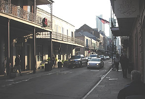
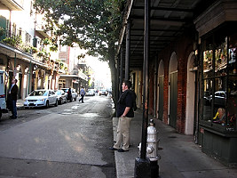
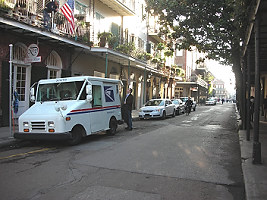
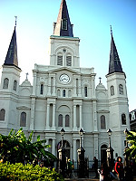
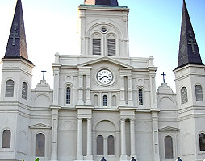
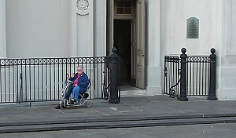
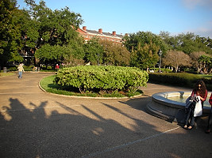

|

More streets in the French Quarter. Obie is in the lower right. |

Look at the colors on the buildings. |

Modern life intrudes on the quaint French Quarter. |
|
# Statue of Jean-Baptiste Le Moyne, Sieur de Bienville, founder of New Orleans. |

# t Louis Cathedral on Jackson Square. |

# Close up of pillars on St Louis Cathedral. |
|

# Obie waiting in Jackson Square for Johnnie to walk around taking some pictures. |

# Jackson Square Park on the Mississippi River - well, on the levy for the Mississippi River. |

# Another view of the Jackson Square Park. |